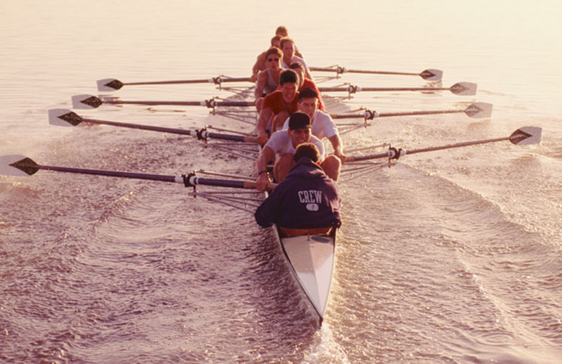
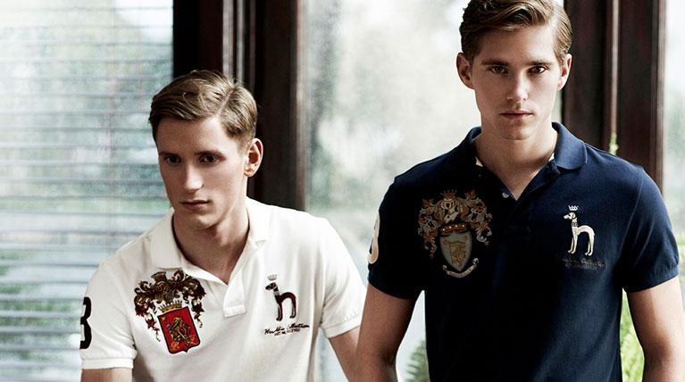
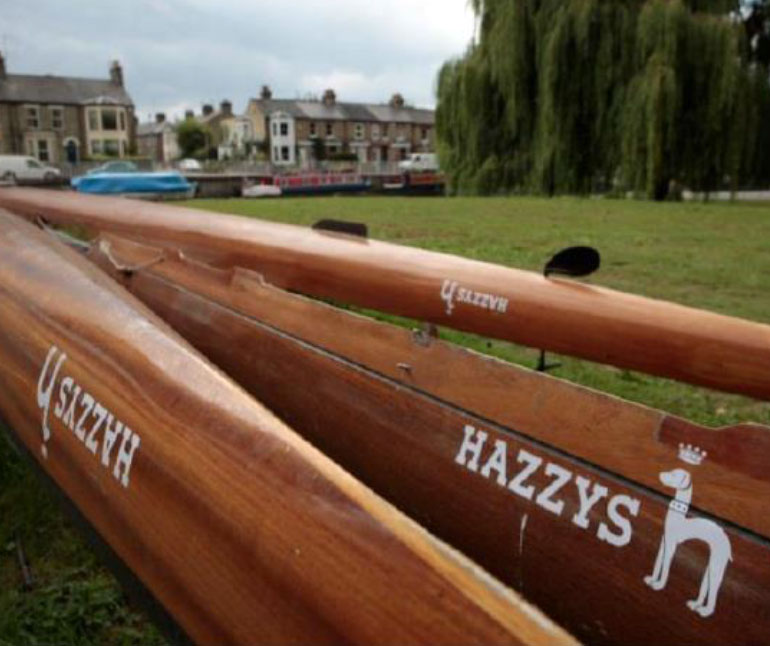
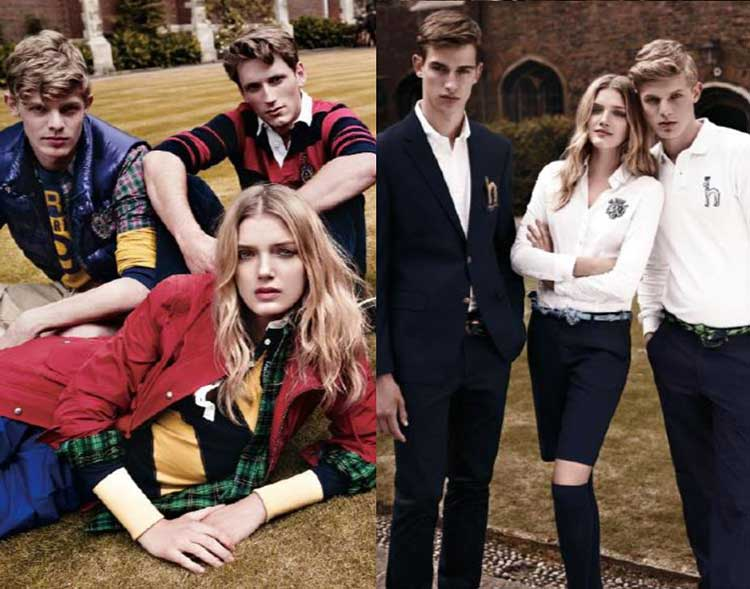
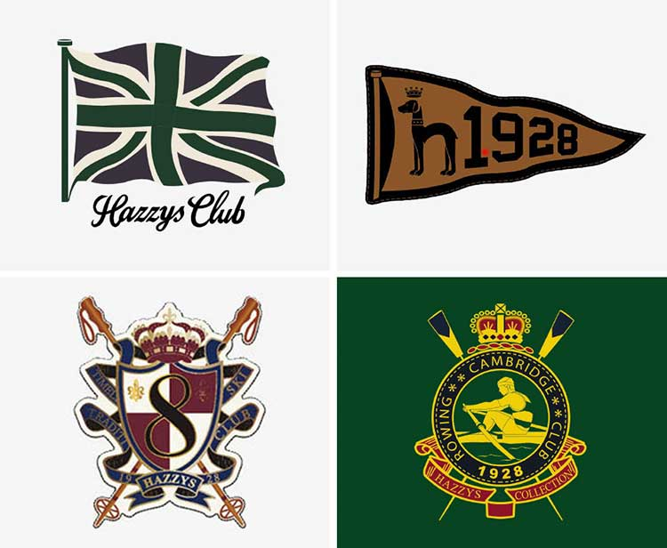

HERITAGE British Style, For your Urban Life
ROWING

THE ORIGIN OF ROWING
Rowing is a type of water sports where people compete on speed by rowing their boats. It is also known as ‘Boat Race’ or ‘Regatta.’ Rowing
as a modern sport began at the Thames River flowing through London in 17th century Britain. Since then,
it was established as a sport which many spectators gather to enjoy after the first opening of a professional rowing competition back in 1715.
In 19th century, amateur league became more active centered around British colleges. Before the start of a rowing competition,
local stores including pubs, cafes, and tents of boat clubs located near the Thames River were busy as they prepared for upcoming festival and
were soon bristling with spectators. The spectators would watch the game with either Pimm’s a traditional British cocktail,
or a bottle of beer in their hands. Rowing games were much more than a simple sport for British people but was rather a scene of social gathering, a festival, and a culture.
Cambridge University
Rowing Club, HAZZYS
Rowing Club, HAZZYS
The first rowing race between Cambridge University and Oxford University which took place in 1829 gathered more than 20,000 spectators at the Thames River. Since then, annual rowing matches between Cambridge and Oxford became much more than a match of two rivals but became one of the largest sports festivals in London. Two teams race against each other on 4.2 mile course referred to as a champion course, and this race which is also broadcasted through TV became a huge event with 15 million spectators. Cambridge University Boat Club which was founded in 1829 is currently leading the race with the total records of 81 wins against 77 wins by Oxford.
In 1928, many rowing clubs were active in each college, and HAZZYS Club was the most well- known for its powerful records. Blue color and bold stripes used on oars are the symbols of this famous club, and these symbols still live on in brand color and preppy pattern and arms of HAZZYS.
The Spirit of HAZZYS Club
PASSION
‘In rowing, you're always striving for that perfect stroke, that repetition, each one being as perfect as the last.’ Every time the players finish 2 km race with their best strokes, their hearts beat as if they are about to burst. They are exhausted to death and feel out of breath. However, they take the oar into their hands again with a refreshed heart. What motivates them to push themselves to the very end of their limit? If passion refers to the state of mind in which we concentrate both body and mind on things we love, rowing is something we need to go beyond the limits by focusing the energy from the whole body. Those who had a chance to experience the exhilarating feeling as they crossed the finish line by combining 8 hearts and minds always returns to their training the next day.
TOGETHER

‘Eight hearts must beat as one in an eight-oared shell or you don’t have a crew.’ Most sports have one or two star players dominating the game and the result is determined by these players. However, a distinguished performance of one player actually breaks the balance and distorts the direction. The key is to find the optimal balance among 8 players with different forms and sustain this balance as they manage through the race. This is crew, the team spirit created by fosucing commitments from 8 different players pursuing a mutual goal. Crews need to create a perfectly uniform stroke and they must repeat this perfect row by keeping pace until they cross the finish line. Standing alongside your companions, creating a beautiful teamwork, these are the purpose of rowing and the values HAZZYS seeks after.

LEADERSHIP
‘Individual commitment to a group effort is what makes a team work, a company work, a society work, a civilization work.’ 8 rowers who are onboard the boat does not know where the boat is heading. They only push the boat by pouring every single drop of energy they have by trusting Cox, the only member who has the view of front, to lead them. Cox observes the flow of water or the wind that may break the boat’s balance and comes up with an appropriate strategy as well as monitoring the state of current pace and watch over other players to check if each one of them is rowing as a single unit to create good movement. This companionship created by the leadership in which Cox wields the wisdom to help other players reach beyond their limit along with the followship of players who trust their Cox’s leadership is the form of leadership HAZZYS pursues.
ROWING STYLE
The rowing style is deeply inspired by the players and the respectful, well-mannered spectators who watches the game. Blue and yellow colors, logo, emblem, bold stripe jacket, hats, and embroideries originating from the dress code for watching rowing matches can be observed in various items such as Pique shirts, jacket, and pants displayed by HAZZYS now. The emblem of the HAZZYS club and a design applying ‘8’, the number of players participating in a rowing game, is special details only found in HAZZYS.
CLASSIC SHIRTS, PIQUE
Pique shirts is the most basic item when it comes to rowing style. The root of this clothing can be found in many sports enjoyed by British nobility such as rowing, polo, and tennis. It is widely worn as a practical piece of clothing regardless of generations and ages. It is a must-have-item for intellectuals as it is both a comfortable casual and a formal clothing that can be worn anytime and anywhere.
TRANDITIONAL JACKET
A jacket crafted using quality material and excellent tailoring presents the wearer sense of dignity and confidence. The players of Cambridge University Rowing Club would usually go with lively stripe jackets but would wear clean white jackets when they were taking pictures as a confident victorious team after winning the match at the Thames River against Oxford. In order to express connection and unity, HAZZYS Club would attach emblem on their jackets or decorate the hemline with navy color tape to manifest the refreshing energy of the Thames River.
THE CHINO SHORTS
In rowing, water splashing into the boat is inevitable. Since rowers cannot wear chinopants which is the clothing representing preppy look, they selected shorts as their uniform. HAZZYS Club showed a unique chino shorts that have embroidery as well as stripe patterns. The way to pull chino shorts off is to wear appropriately fitting pique shirts and matching loafers just like rowers going into a match. Then, adding a scarf to give a distinguishing point like the rowers.

YOUTHFUL STRIPE SHIRTS
Although stripe is one of the details of preppy look, it is the most symbolic pattern icon in rowing look. This is because the stripe takes the shape of high waves(used in marine look), and the straight lines resemble the dynamic energy asked from the rowers. Also, a closer look at 8 rowers sitting inside the boat rowing their oars shows the 8 uniformly moving oars create lines that touches stripe patterns. HAZZYS Club succeeds the spirit of rowing through the colors of navy, yellow, and white which resemble wave as well as stripe patterns.
WOMEN'S ROWING
After the players are done with rowing matches which calls for intense concentration, perseverance, and physical strength, they say that they are overcome by exhaustion as if they had just finished running a marathon. For female players, rowing was a very energy draining sports that calls for immense amount of perseverance. However, as if to prove that rowing is not a sport only for men, female rowers have developed their race by treading exciting paths. The first women’s rowing club was founded in West College back in 1877, and Molly Kind shocked the rowing world by winning the Covington Newport race in the following year of 1878. Since then, the golden days of British female rowers dawned starting from 1880s and they spread their reach toward the U.S. Women’s rowing clubs centered in Philadelphia were suits that emphasize elegance and engraved their pictures on lithographs as they opened up the golden age of women’s rowing. Female rowers who did not want to be treated differently from the male rowers would wear pique shirts and chino shorts along with navy colored muffler.
DETAIL
Number 8 - Although players do compete in single rowing matches, the beauty of rowing is the one where 8 rowers sit in the same boat to complete. When all 8 rowers pick up the speed in uniform pace, the team takes a step forward toward victory. 1928 – 1928 stands for the year in which HAZZYS Rowing Club was founded. Although the number marks the birth of HAZZYS Rowing Club, number ‘2’ and ‘8’ hold special meaning for HAZZYS this year is the 20th anniversary of HAZZYS after being founded in 2000. H.R.C. is a race where players need to play as a team, not as an individual, and it values unity and connectedness. By engraving H.R.C, HAZZYS Crews held the dignity in their heart as the members of the club. Alphabet H – Rowers of Cambridge and Oxford created logos standing for the clubs’ initials and competed with their dignity at stake. ‘H’ stands for ‘HAZZYS Club.’ Emblem – Emblem is a detail not only represents rowing but also preppy look as well. The emblem of HAZZYS Club is distinguished by how it symbolizes rowing by using boats and oars.
